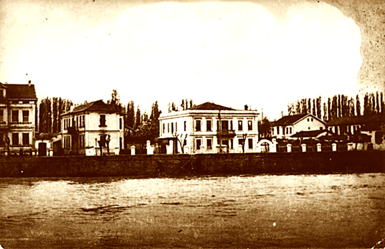
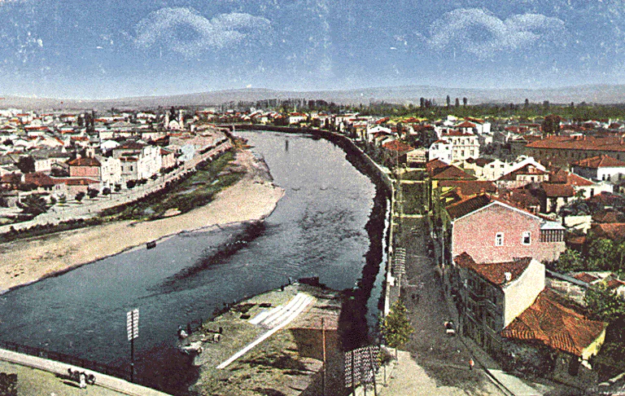
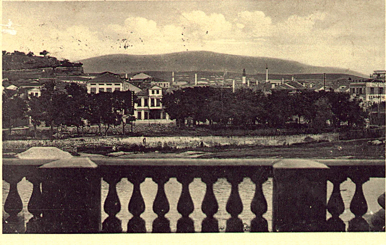
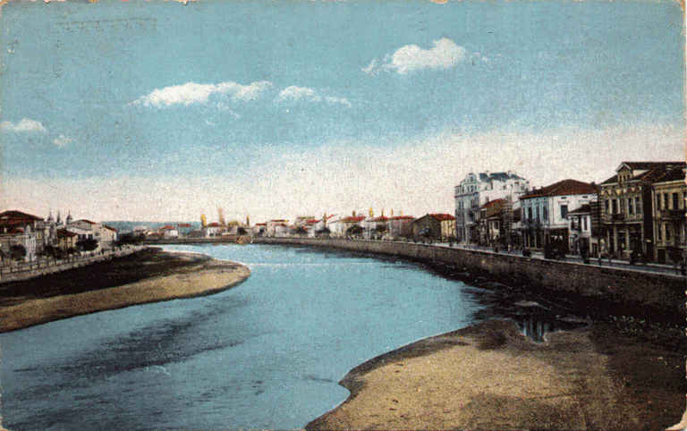
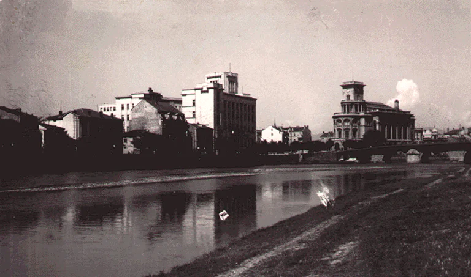

Në lumin Vardar
- Skenari
- Dimitrie Osmanli, Simon Drakul
- Kamera
- Kiro Bilbilovski
- Viti
- 1964
- Kohëzgjatja
- 00:16

Keji "13 Nëntori" - 1888.

Mulli uji në rrjedhën e sipërme të Vardarit - fundi i shekullit XIX.

Edhe pse kjo kartolinë është shumë e dëmtuar, u përfshi në këtë koleksion sepse është nga fundi i shekullit XIX dhe fillimi i shekullit XX, dhe tregon disa ndërtesa që shihen vetëm në të. Djathtas është Banka Osmane. Në plan të parë është rrapi i vjetër në të cilin u var trupi i vdekur i Karposhit më 1689. Mbi të ngrihet Kalaja e Shkupit. Krejt majtas duket një pjesë e Urës së Gurit.

Pamje e dy kejeve të Vardarit - fillimi i shekullit XX.

Shkupi më 1902 - pamje nga Ura e Gurit drejt urës prej druri. Vardari ka mure keji. Vërehen ndërtesa banimi e publike. Djathtas në fotografi duket teatri turk, ndërsa majtas, që në fillim, Xhamia Burmali. Në sfond janë banka dhe posta e vjetër.

Pamje drejt urës së vogël prej druri, teatrit të vjetër turk dhe një pjese të Kalasë së Shkupit. (fillimi i shekullit XX)

Pamje nga bregu i djathtë i Vardarit drejt Kalasë së Shkupit. (fillimi i shekullit XX).

Pamje e bregut të majtë të Vardarit (keji "Dimitar Vlahov") - fillimi i shekullit XX. Në murin e kejit duket grykëderdhja e lumit Serava.

Urë prej druri, para ndërtimit të urës së hekurt. Në sfond janë Ura e Gurit dhe Xhamia Burmali. (fundi i shekullit XIX)

Fillimi i shekullit XX. Banka Osmane, Mitropolia e Shkupit dhe ndërtesat në bregun e majtë të Vardarit, menjëherë pas Urës së Gurit. Në plan të parë është rrapi i vjetër.

Pamje e bregut të majtë të Vardarit drejt kishës Shën Mina (me dy kube) dhe kishës Shën Mëria (në sfond, me një kube). - fillimi i shekullit XX.

Në plan të parë janë ndërtesa e gjykatës dhe shkolla e vjetër, ndërsa në sfond duken kubetë e kishës Shën Mina - fillimi i shekullit XX.

Pamje e dy kejeve nga Vardari - fillimi i shekullit XX.

Bregu i majtë i Vardarit - keji "Dimitar Vlahov" me Bankën Osmane, Mitropolinë dhe dy kubetë e kishës Shën Mina në sfond. (fillimi i shekullit XX)

Bregu i majtë i Vardarit - keji "Dimitar Vlahov", midis Urës së Gurit dhe urës së hekurt, me ndërtesa banimi. (fillimi i shekullit XX)

Fotografia është bërë nga Ura e Gurit, rreth vitit 1910. Majtas duket teatri i vjetër turk, dhe mbi të Kalaja e Shkupit.

Bregu i majtë i Vardarit me lagjen hebreje dhe Kalanë e Shkupit në sfond. (1910)

Fotografia është bërë nga Ura e Gurit, rreth vitit 1910. Majtas duket teatri i vjetër turk, dhe mbi të Kalaja e Shkupit.

Shkupi në përmbytjen e vitit 1916. Uji arriti deri te ndërtesat. Djathtas duket si është shembur një pjesë e ndërtesës nga përmbytja.

Shkupi pas vitit 1918. Dy kejet e Vardarit si rrugë kryesore, të rëndësishme për zhvillimin e qytetit. Në sfond duket Ura e Gurit me Xhaminë Burmali. Përgjatë kejit janë ngritur shumë ndërtesa me forma të ndryshme arkitektonike, afër shkollës evropiane.

Shkupi para Luftës Ballkanike. Keji në bregun e djathtë të Vardarit. Në sfond duken Xhamia Burmali dhe Ura e Gurit. Në plan të parë janë konsullata ruse dhe ndërtesa të tjera, me ndikim të shkollës evropiane të arkitekturës: forma klasike, akademike dhe pseudoklasike.

Pamje e bregut të djathtë të Vardarit me bankën dhe postën e vjetër, që ndodheshin midis Urës së Gurit dhe urës së vogël prej druri - fillimi i viteve 1920.

Pamje drejt bregut të majtë të Vardarit. Në plan të parë janë ndërtesa e gjykatës dhe shkolla e vjetër, ndërsa në sfond duken kubetë e kishës Shën Mina. Djathtas saj është kisha Shën Mëria. - vitet 1920.

Pamje e bregut të djathtë të Vardarit me bankën dhe postën e vjetër, që ndodheshin midis Urës së Gurit dhe urës së vogël prej druri - fillimi i viteve 1920.

Bregu i djathtë i Vardarit para Urës së Gurit. Majtas duken banka dhe posta e vjetër. Djathtas në kartolinë duket ura e vogël prej druri - rreth vitit 1920.

Pamje e bregut të djathtë të Vardarit me bankën dhe postën e vjetër, që ndodheshin midis Urës së Gurit dhe urës së vogël prej druri - fillimi i viteve 1920.

Pjesë e bregut të majtë të Vardarit - afërsisht vendi i ndërtesës së sotme të Radio Televizionit të Maqedonisë. Duket minareja e Xhamisë Vardar Teqe (ndërtuar në fillim të shekullit XVI) - fillimi i viteve 1920.

Pjesë e bregut të majtë të Vardarit - afërsisht vendi i ndërtesës së sotme të Radio Televizionit të Maqedonisë. Duket minareja e Xhamisë Vardar Teqe (ndërtuar në fillim të shekullit XVI) - fillimi i viteve 1920.

Pamje e bregut të djathtë të Vardarit para Urës së Gurit. Hapësira e mesme e kejit. Majtas duken banka dhe posta e vjetër. Djathtas në kartolinë duket ura e vogël prej druri - rreth vitit 1920.

Shkupi - pjesë e sheshit. Majtas duket një pjesë e Urës së Gurit, ndërsa djathtas hapësira para ndërtimit të Bankës Kombëtare. Keji është rregulluar si rrugë qarkullimi. Në sfond djathtas duket gjimnazi i djemve.

Shkupi - pjesë e sheshit. Majtas duket një pjesë e Urës së Gurit, ndërsa djathtas hapësira para ndërtimit të Bankës Kombëtare. Keji është rregulluar si rrugë qarkullimi. Në sfond djathtas duket gjimnazi i djemve. - vitet 1930

Keji "Dimitar Vlahov" - bregu i majtë i Vardarit. - fillimi i viteve 1920

Pamje nga Ura e Gurit drejt monumentit të luftëtarëve të rënë dhe Bankës Osmane. - vitet 1920.

Fotografi panoramike e Shkupit: keji i majtë i Vardarit me një pjesë të lagjes hebreje, lagjen Pajko dhe Urën e Gurit. - vitet 1920

Pamje e Shkupit nga Shtëpia e Oficerëve drejt lagjes hebreje. - vitet 1920.

Pamje e bregut të djathtë të Vardarit me ndërtesa banimi. Në sfond duken Ura e Gurit dhe Shtëpia e Oficerëve në ndërtim. (rreth vitit 1925)

Shkupi, vitet 1930. Pamje e dy kejeve. Në plan të parë janë shkolla e vjetër dhe ndërtesa e gjykatës, e menjëherë prapa duken dy kambanoret e kishës Shën Mina. Në sfond duket Shtëpia e Oficerëve, para ndërtimit të Bankës Kombëtare. Fotografuar nga ura e hekurt.

Keji në bregun e djathtë të Vardarit para Urës së Gurit. Në plan të parë është një ndërtesë banimi me dyqane në përdhes dhe hyrjet në pasazhin "Aroesti", të ndërtuar në vitet 1920, një qendër e vogël tregtare me dyqane zejtarësh e tregtarësh. (Në tërmetin katastrofik të 1963 këtu humbën jetën shumë njerëz.) Në sfond duken banka bujqësore, Shtëpia e Oficerëve, Banka Kombëtare dhe Ura e Gurit. (vitet 1930)

Keji "13 Nëntori" me ndërtesa banimi, një pjesë e Urës së Gurit dhe Shtëpia e Oficerëve - vitet 1920.

Pamje drejt kejit "13 Nëntori" në bregun e djathtë të Vardarit, Urës së Gurit dhe Shtëpisë së Oficerëve - fotografuar rreth vitit 1927.

Pjesë e sheshit para Urës së Gurit dhe të dy brigjet e Vardarit. Majtas në sfond duken kisha Shën Mina me dy kube dhe, pak më majtas, kisha Shën Mëria. Hapësira e kejit është rregulluar me ndriçim elektrik dhe gjelbërim. (1925-1930)

Bregu i djathtë i Vardarit, nga ura e vogël prej druri drejt parkut - vitet 1930.

Keji "13 Nëntori". Pamje drejt Urës së Gurit dhe Shtëpisë së Oficerëve - fundi i viteve 1930.

Keji në bregun e majtë të Vardarit para Urës së Gurit, me ndërtesa banimi në lagjen hebreje. Në sfond duket Banka Osmane - rreth vitit 1930.

Pamje nga Ura e Gurit mbi Vardar drejt urës së vogël prej druri dhe të dy brigjeve të lumit. Djathtas është Teatri Kombëtar, majtas banka dhe posta e vjetër. - vitet 1930

Pamje e lagjes "Bunjakovec". Shtrati i Vardarit mbrohet me argjinatura dheu. - vitet 1930

Bregu i majtë dhe i djathtë i Vardarit, fotografuar nga Ura e Gurit. Hapësira e mesme e kejit në të dyja anët e Vardarit. - rreth vitit 1930

Bregu i djathtë i Vardarit. Keji "13 Nëntori". - rreth vitit 1930

Shkupi, vitet 1930. Pamje nga ura e hekurt mbi Vardar e dy kejeve, të ndërtuar me ndërtesa banimi e publike. Në plan të parë djathtas janë shkolla e vjetër, ndërtesa e gjykatës dhe dy kambanoret e kishës Shën Mina. Në sfond janë Shtëpia e Oficerëve dhe Banka Kombëtare.

Pamje drejt kejit "13 Nëntori" në bregun e djathtë të Vardarit, Urës së Gurit dhe Shtëpisë së Oficerëve - fotografuar rreth vitit 1930.

Pamje e dy kejeve të Vardarit dhe urës së hekurt. - vitet 1950

Pamje e dy kejeve të Vardarit dhe urës së betonit. - vitet 1950.

Bregu i djathtë i Vardarit pas Urës së Gurit, fotografuar para tërmetit katastrofik të 26 korrikut 1963. Në sfond duken Shtëpia e Oficerëve dhe Banka Kombëtare.

Keji në bregun e djathtë të Vardarit. Kompleksi afarist e banimi "Kullat në Vardar" (projektues arkitekti Aleksandar Serafimovski). Fotografia është bërë në vitet 1960, para tërmetit katastrofik të 26 korrikut 1963.

Bregu i djathtë i Vardarit me Urën e Gurit, kullat përgjatë Vardarit dhe grand hotelin "Skopje", fotografuar menjëherë pas tërmetit katastrofik të 26 korrikut 1963, para rregullimit të Vardarit. Rregullimi u krye në periudhën 1965-1968.

Pamje drejt bregut të djathtë të Vardarit. Harku në plan të parë është pjesë e Urës së Gurit; fotografuar në vitet 1950.

Pamje nga bregu i majtë i Vardarit drejt Urës së Gurit. Në sfond duken Kullat në Vardar. - vitet 1970

Pamje e postës së sotme qendrore - Qendra e Telekomunikacionit (ndërtuar 1974-1980, projektues Janko Konstantinov) dhe keji para saj.

 Ujësjellësi4 kartolina
Ujësjellësi4 kartolina Kalaja30 kartolina
Kalaja30 kartolina Urat60 kartolina
Urat60 kartolina Kej58 kartolina
Kej58 kartolina Sheshi46 kartolina
Sheshi46 kartolina Ndërtesat66 kartolina
Ndërtesat66 kartolina Kishat e krishtera19 kartolina
Kishat e krishtera19 kartolina Objektet myslimane33 kartolina
Objektet myslimane33 kartolina Shtëpia e Oficerëve29 kartolina
Shtëpia e Oficerëve29 kartolina Teatri28 kartolina
Teatri28 kartolina Stacioni hekurudhor13 kartolina
Stacioni hekurudhor13 kartolina Shkollat36 kartolina
Shkollat36 kartolina Parqet12 kartolina
Parqet12 kartolina Tregjet18 kartolina
Tregjet18 kartolina Rrugët38 kartolina
Rrugët38 kartolina Panorama I60 kartolina
Panorama I60 kartolina Panorama II30 kartolina
Panorama II30 kartolina Kolazhe55 kartolina
Kolazhe55 kartolina Përmbytjet9 kartolina
Përmbytjet9 kartolina Tërmeti27 kartolina
Tërmeti27 kartolina Shkupi 200026 kartolina
Shkupi 200026 kartolina